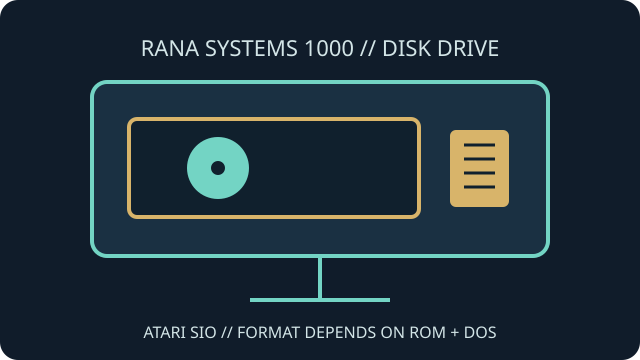

[ INDIVIDUAL COMPONENT // FLOPPY DRIVES ]
Rana Systems 1000 Disk Drive
The Rana Systems 1000 is an external 5.25-inch floppy drive for Atari 8-bit computers. Its integrated controller and firmware support Atari disk commands over the host's SIO chain.

IDENTIFICATION NOTE: Documented Rana 1000 units exist with different internal controller/processor implementations. Confirm the board revision and ROM before inferring precise format or repair compatibility.
Model specifications
| Catalog subcategory | External floppy mechanisms |
|---|---|
| Exact model | Rana Systems 1000 |
| Drive format | External 5.25-inch floppy; available disk densities and formatted capacities depend on controller/ROM revision and DOS. |
| Host interface | Atari SIO serial peripheral interface with the daisy-chain behavior described in the installation guide. |
| Controller variants | Preserved examples are documented with more than one controller/processor implementation; identify the installed board rather than assuming a single internal revision. |
| Host compatibility | For Atari 400/800/XL/XE systems that provide compatible SIO and software support; disk format support is not universal across DOS versions. |
Model-specific compatibility checks
- Match the model label, controller board, ROM and wiring to the service or installation document before making changes.
- Use a compatible SIO cable and Atari host. A standard PC floppy controller cannot communicate with the drive through its SIO connector.
- Verify the disk's geometry and DOS before writing; reported capacity is format- and software-dependent.
Preservation and service notes
Capture board and mechanism labels, ROM identifiers and cable arrangement before service. The installation guide and board schematics are more appropriate than assumptions from visually similar Atari peripherals.
Preserve source diskettes, document imaging hardware and software, and retain unmodified raw images alongside any converted copies.
Manufacturer documentation & sources
- Rana Systems 1000 — archived owner documentationScanned documentation filed for the Rana 1000 Atari disk drive.
- Rana Systems 1000 Installation Guide and SchematicsInstallation information and circuit references for preserved drive variants.
Use revision-specific instructions; the internal design and supported modes are not identical across every surviving unit.